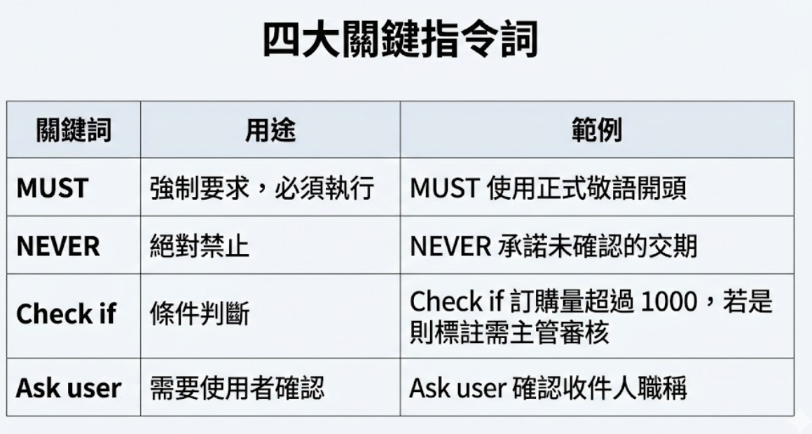
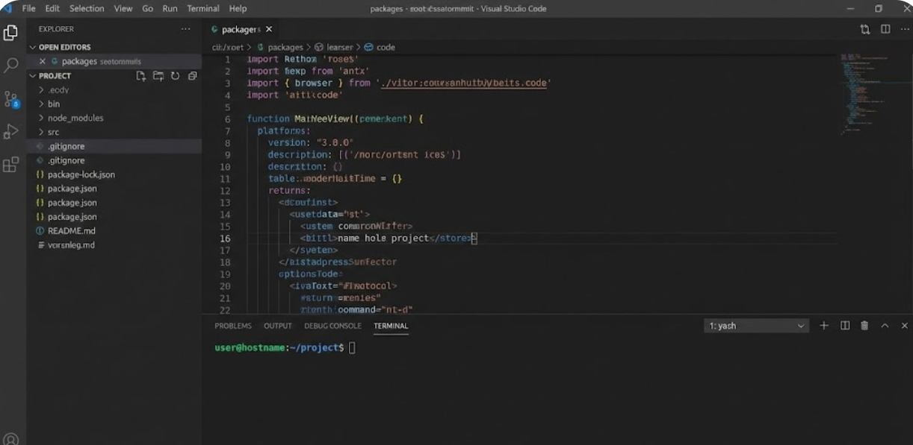
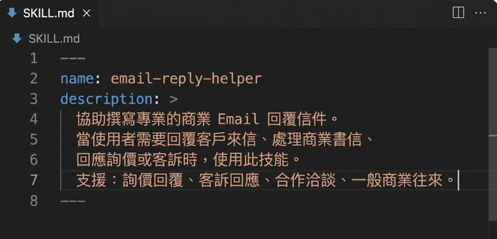
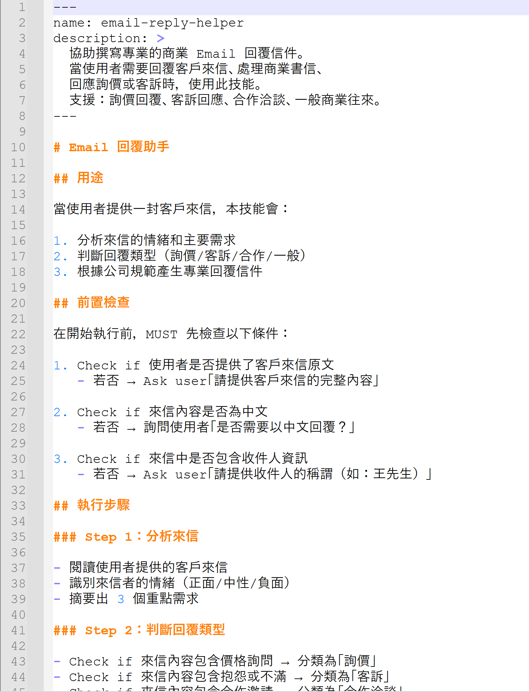
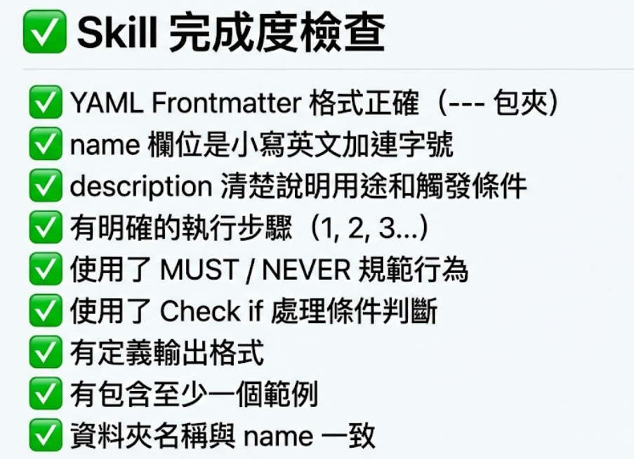

Part 2 · SKILL.md 結構與實作
SKILL.md 全解析
＋動手寫第一個 Skill
深入理解 SKILL.md 的完整結構，親手完成「Email 回覆助手」
YAML
Markdown
Email 回覆助手
📄 SKILL.md 結構總覽
一個 SKILL.md 就是一個完整的 AI 技能，它由兩大部分組成：
| 部分 |
內容 |
用途 |
| YAML Frontmatter |
name + description |
AI 用來辨識這個 Skill |
| Markdown 主體 |
用途、前置檢查、執行步驟、輸出格式、安全規則、範例 |
AI 用來執行這個 Skill |
各段落功能一覽
🎯
## 用途
描述這個 Skill 是做什麼的，讓 AI 知道何時該啟動
✅
## 前置檢查
執行前需要確認的條件，像是「有沒有收到來信？」
📋
## 執行步驟
具體的 Step 1、2、3... 一步步引導 AI 完成任務
📤
## 輸出格式
定義最終產出要長什麼樣子，確保品質一致
🛡️
## 安全規則
設定「絕對不能做」的事情，防止 AI 犯錯
📖
## 範例
提供完整的輸入/輸出範例，讓 AI 有參考依據

📋 YAML Frontmatter（元資料）
YAML Frontmatter 是 SKILL.md 最前面用 --- 包圍的區塊，提供 AI 辨識技能的關鍵資訊：
---
name: email-reply-helper
description: >
協助撰寫專業的商業 Email 回覆信件。
當使用者需要回覆客戶來信、處理商業書信、
回應詢價或客訴時，使用此技能。
支援：詢價回覆、客訴回應、合作洽談、一般商業往來。
---
name（技能名稱）
- 必須與資料夾名稱一致，使用小寫英文和連字號（
-）
- 範例：
email-reply-helper、meeting-notes-generator
- 不可以使用中文、空格、底線或大寫字母
description（技能描述）
- 用
> 開頭表示多行文字，下一行要縮排 2 格
- 要描述清楚「什麼時候該用這個 Skill」
- 越詳細越好 -- AI 靠這段文字來判斷是否要啟動這個技能
⚠️ 注意：name 和資料夾名稱不一致是最常見的錯誤！
例如資料夾叫 email-reply-helper，但 name 寫成 email_reply_helper 或 EmailReplyHelper，AI 就找不到這個 Skill。

🔑 SKILL.md 四大關鍵指令
這四個指令控制著 AI 在執行 Skill 時的行為邊界：
| 指令 |
含義 |
範例 |
使用時機 |
| 🟢 MUST |
必須執行 |
MUST 以「您好」開頭 |
定義品質標準，確保必要步驟 |
| 🔴 NEVER |
絕對禁止 |
NEVER 使用口語化表達 |
設定安全底線，防止錯誤行為 |
| 🟡 Check if |
條件判斷 |
Check if 金額超過 10 萬 |
分支處理邏輯，依狀況採取不同行動 |
| 🔵 Ask user |
請求確認 |
Ask user 提供收件人稱謂 |
需要人工輸入，確保資訊完整 |
💡 重點：這四個指令是 Skill 的「防呆機制」核心。它們讓 AI 知道哪些事情一定要做、哪些絕對不能做、什麼情況要分支處理、什麼時候要問人。Day 1 下午會深入學習如何靈活運用。

💻 Step 1：開啟終端機
接下來我們要動手實作了！首先，開啟你的終端機（Terminal）。
方法一：從 VS Code 開啟
- 開啟 VS Code
- 選單列 → Terminal → New Terminal
- 底部會出現終端機面板
方法二：從系統終端機開啟
- 在專案資料夾中右鍵
- 選擇「在終端機中開啟」或「Open in Terminal」
💡 提醒：確保終端機的位置是你的「專案根目錄」。你可以用 pwd（Mac/Linux）或 cd（Windows）確認目前位置。

📁 Step 2：建立 Skill 資料夾
在終端機中執行以下指令，建立 Skill 的資料夾結構：
mkdir -p skills-source/email-reply-helper/assets
建好後的結構
skills-source/
└── email-reply-helper/
├── SKILL.md ← 等一下要建立
└── assets/
└── email-template.md ← 範本檔案
✅ 結構說明：每個 Skill 都是一個獨立的資料夾，裡面放 SKILL.md（技能定義）和 assets/（附屬資源，如範本檔案、圖片等）。這種結構清楚好管理，也方便日後分享或販售。

✍️ Step 3：撰寫 YAML Frontmatter
在 SKILL.md 最頂端，寫入以下 YAML Frontmatter：
---
name: email-reply-helper
description: >
協助撰寫專業的商業 Email 回覆信件。
當使用者需要回覆客戶來信、處理商業書信、
回應詢價或客訴時，使用此技能。
支援：詢價回覆、客訴回應、合作洽談、一般商業往來。
---
注意事項
--- 前後各三個短線，不能多也不能少name: 後面要有空格，然後才接值description: > 的 > 表示多行文字，下一行要縮排 2 格- 所有內容必須是半形符號（英文冒號、英文短線）
name 值必須和資料夾名稱完全一致
⚠️ 警告：YAML 對格式非常敏感！多一個空格或少一個空格都可能出錯。常見的問題包括：
1. 使用全形冒號（：）而非半形冒號（:）
2. > 後面的內容沒有縮排
3. --- 前後有多餘的空行或字元

✅ Step 4：完成完整 SKILL.md
在 YAML Frontmatter 之後，接著撰寫 Markdown 主體。以下是六大段落的功能：
1
## 用途
描述這個 Skill 做什麼、適用於哪些場景，讓 AI 判斷何時啟動
2
## 前置檢查
開始前要確認什麼？例如「使用者是否提供了原始來信？」
3
## 執行步驟
具體怎麼做？Step 1 分析來信 → Step 2 判斷語氣 → Step 3 撰寫回覆...
4
## 輸出格式
做完要長什麼樣子？定義標題、段落、結尾問候語等格式要求
5
## 安全規則
什麼事情絕對不能做？NEVER 承諾未授權的折扣、NEVER 透露內部資訊
6
## 範例
做一次示範，提供完整的「輸入 → 輸出」範例讓 AI 有明確參考
💡 小技巧：不需要一次寫完所有段落！可以先寫核心的「執行步驟」和「輸出格式」，再逐步補充「前置檢查」、「安全規則」和「範例」等內容。先讓 Skill 跑起來，再慢慢完善。

✔️ Step 5：自我檢查
寫完 SKILL.md 後，請逐一核對以下檢查項目：
- ☐ YAML frontmatter 格式正確？（三個短線
--- 開頭結尾）
- ☐
name 與資料夾名稱一致？（email-reply-helper）
- ☐
description 清楚描述功能和使用時機？
- ☐ 執行步驟有明確的順序和編號？（Step 1, Step 2...）
- ☐ MUST / NEVER 規則是否完整？有沒有遺漏重要的限制？
- ☐ 輸出格式有具體的範例？AI 看了知道「做出來要長怎樣」？
⚠️ 最常見的三個錯誤：
1. name 不一致 -- 資料夾名和 YAML 中的 name 不同，AI 找不到 Skill
2. YAML 縮排錯誤 -- 多一格或少一格空格，導致解析失敗
3. 缺少 description -- AI 不知道什麼時候該啟動這個技能

📝 Part 2 重點回顧
恭喜完成 Part 2！讓我們回顧一下這個章節的核心重點：
1
SKILL.md = YAML + Markdown
一個檔案就是一個完整的 AI 技能。YAML 負責「辨識」，Markdown 負責「執行」。結構清楚、分工明確。
2
四大關鍵指令
MUST / NEVER / Check if / Ask user 是防呆的核心。用這四個指令控制 AI 的行為邊界。
3
資料夾結構
skill-name/SKILL.md + assets/ -- 每個技能獨立一個資料夾，結構清楚好管理，方便分享與變現。
4
檢查很重要
name 一致、YAML 格式正確、邏輯清楚 -- 這三件事是 Skill 能不能跑起來的關鍵。